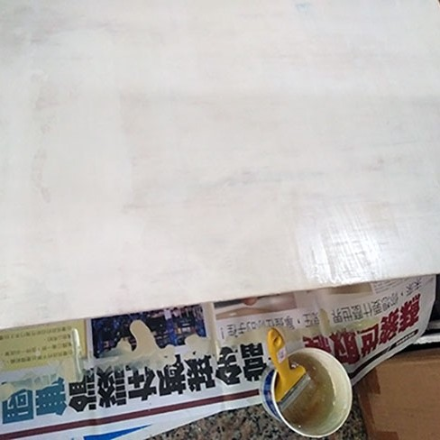

他們都是用一樣的方式畫門神嗎？還是不同地區會有不同差異？

傳統的門神彩繪施作過程大致可分為打地仗、起稿、安金、上彩等四大階段 而傳統建築彩繪上又分為「彩」與「繪」。
施作方式和流程也因各個藝師學習的流派、現代材料進步，或是製作所需的時間而有所改變。
他們都是用一樣的方式畫門神嗎？還是不同地區會有不同差異？
傳統的門神彩繪施作過程大致可分為打地仗、起稿、安金、上彩等四大階段 而傳統建築彩繪上又分為「彩」與「繪」。
施作方式和流程也因各個藝師學習的流派、現代材料進步，或是製作所需的時間而有所改變。
「彩」指的是針對木構件的前期處理，包含木構件的檢查、清理、填補，及灰料、塗料打底的工作，也稱作「裱門板」
而「繪」是包含起稿、安金、上彩等階段的作畫流程。
寺廟門神的木材部分稱作「厚料」，臺灣有扁柏及紅檜，或是選用出產自福州的福杉木。
在建造寺廟前一至兩年就要事先購買，放置在通風處自然乾燥，如果前置作業做得好的話，木板可以維持一到兩百年。
如果是選用臺灣木，則以香氣濃郁、防蟲性高，且不易腐朽的扁柏及紅檜為多
但大多選用出產自福州的福杉木，特性是容易加工處理，耐久及耐腐性也高，木材本身不易開裂、變形，且福州杉繁殖容易，較無病蟲害。
在修復上，修復團隊會採用握釘力較高的南松木作為門軸。
地仗層是木材表面與表層油漆間的基層。 「打地仗」主要是為了保證木板的光滑平整，讓油灰滲入木料，防止木材的縫隙和裂痕處造成的不平整影響到作畫。 還有預防蟲害、增加木構件的使用年限與保護性，避免溫溼度的變化或木構件本身的劣化造成結構不穩定，同時也能使油漆有更好的附著力。
因為現代材料的進步，傳統與現代製作的方法也有差別：
1.修補門板
利用竹釘、石灰等材料填入門板隙縫
2.披麻
在門板上紮緊一層布、麻或紗。
3.捉灰
使用桐油或豬血、石灰層層塗抹，填補布匹或麻、紗經緯線縫隙，以利表面平整，待乾後，使用砂紙打磨。
接著打上紅丹漆或一般色漆等底漆。
1.修補門板
利用樹脂或汽車用補土、石灰填入門板隙縫
2.披麻與捉灰
門板乾燥後，使用砂紙將門板打磨至光滑平整。在門板上打上一層白色打底漆。
底漆乾燥後，將松香水與面漆調和，刷在門板上，等乾後使用砂紙打磨。
有了現代工具的幫助，在做前置處理變得更方便了呢！
簡稱起稿，俗稱打草稿。中國北式彩繪匠司專稱為「攤活」，目的為確保整體構圖與門神、裝飾構件比例，有助於提高時效和施工品質。 也有使用轉印的手法，即先將草紙對折一半墨畫半邊圖案，再轉印到另一半。此方法更可以節省時間，現今有許多匠師及新生代師傅皆會使用此手法。
安金的主要目的是為了使整體有金光絢麗感，或為畫面打造出畫龍點金的效果。 安金是把金膠油，俗稱「羅漢漆」塗抹在要安金的地方，待其風乾，再將金箔貼上，並使用特製刷具使金箔完整拓上。 為講求快速配合工程進度，現今有些畫師大多購買現成的金箔膏替代，優點為乾燥時間短。
依照墨線上底色，透過平塗、化色（暈染）、敷彩、描金等細化步驟，最後再以墨線整理一次不清楚的線條。 若因工地現場的溫溼度，無法在預定時間內乾燥，則會將門板拆下平放，防止顏料流淌下來。